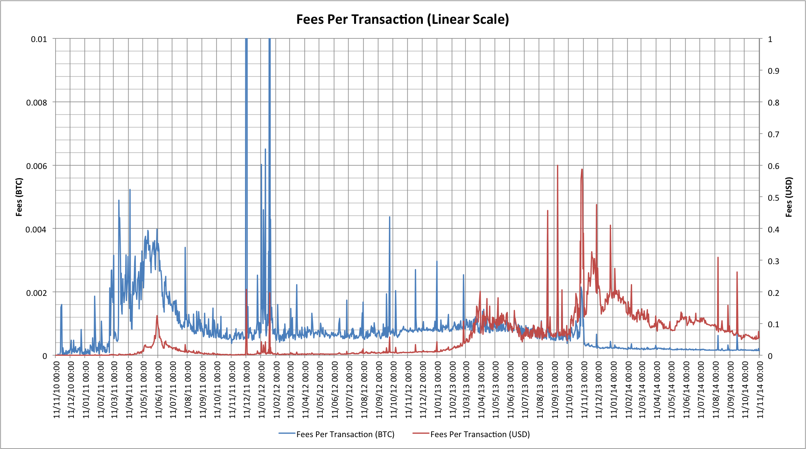
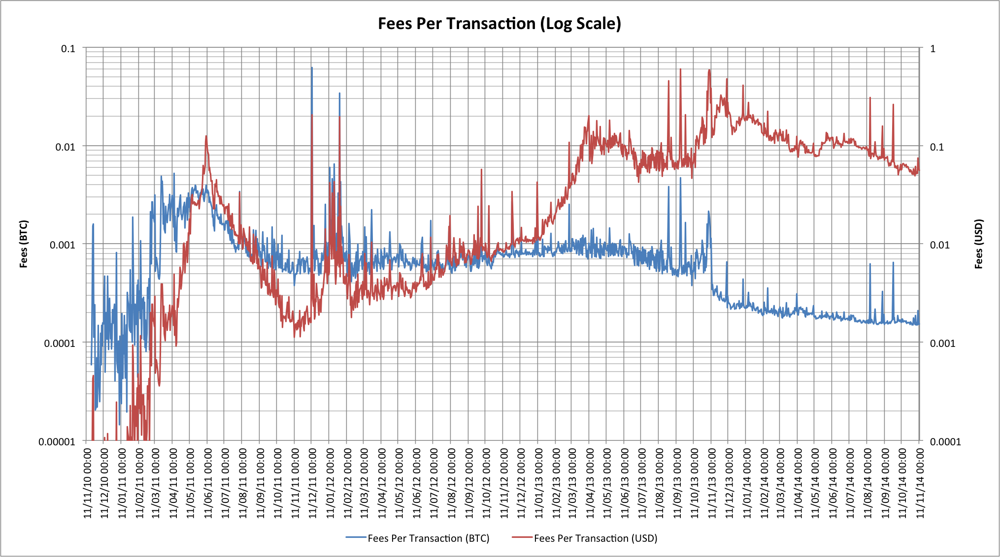
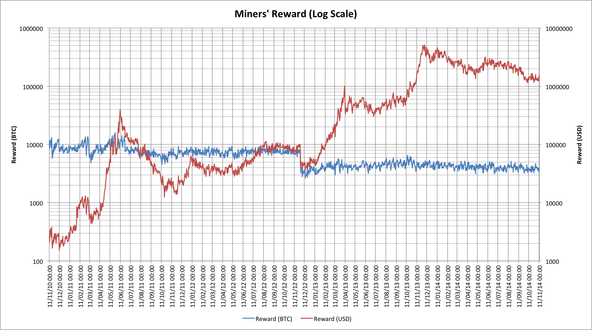
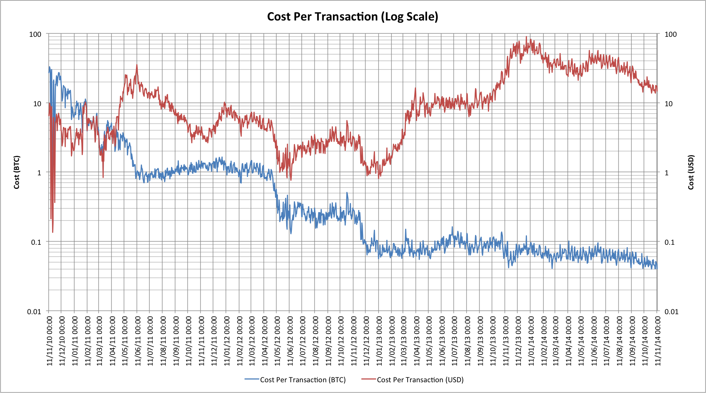
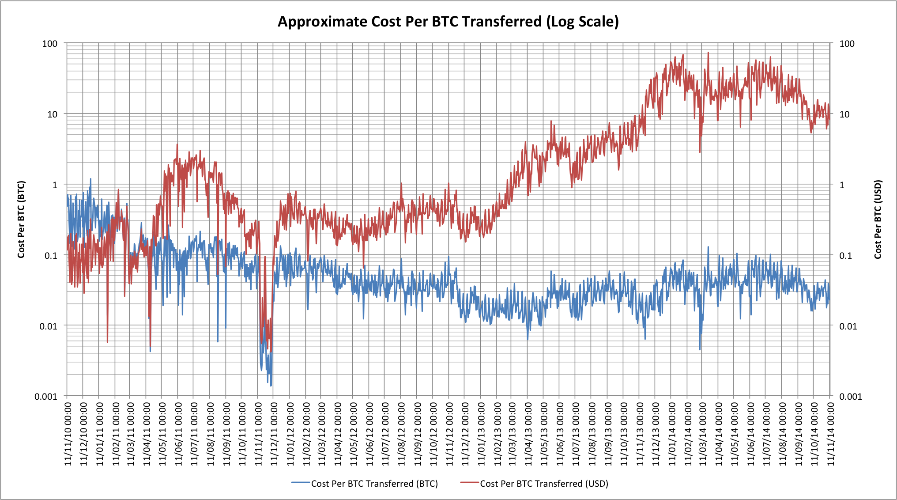

Bitcoin is often touted as having substantially lower fees associated with using it than most other financial systems, but fees and costs are very different things. The reality of things in the Bitcoin ecosystem is rarely simple, and this one is no exception. What then are the actual numbers, where are they heading and what are the consequences?
Transaction fees
Probably the biggest challenge in looking at the costs of transactions is to work out what that actually means. For anyone sending BTC the obvious “cost” is the transaction fee, so let’s look at that:

This data, as with all of the data in this article, comes from blockchain.info. The chart shows the fee per transaction for the last 4 years, and shows that that cost is in BTC and what that converted to in USD. The USD trace is really hard to follow early on though so let’s look at this on a logarithmic scale:

Certainly these numbers would appear to back up the claim that Bitcoin transactions are really inexpensive! BTC-denominated fees have actually steadily fallen for most of the last 4 years and are now at about 0.00015 BTC per transaction. As long as we’re talking about transactions involving, say, 0.1 BTC then the fees have pretty-much always been less than 1%, and are now more like 0.15%!
This is where things start to become a little interesting though. The fee is primarily concerned with ensuring a minimum charge to avoid the network relaying “dust” transactions of tiny amounts, and also charging an amount per kbyte of data required to store the transaction in the blockchain. What the fee doesn’t take into account at all is the BTC value being transferred.
The fee structure means that BTC transfers are incredibly inexpensive for large transactions, but that small transfers can become much more expensive. As we’ve seen before in “7 transactions per second? Really?", there’s actually a hard limit on transaction space and the current mean transaction size limits the network to less than 3.5 transactions per second so the fee structure is designed to prevent people from consuming too much block space with low-value transactions (if anyone wants to do micropayments then they really need to aggregate them together).
The transaction rate limit also has an impact on the speed with which the network confirms transactions. With more transactions the network becomes congested and confirmation times increase. The only way to avoid increased confirmation times will be to incentivize miners to mine specific transactions, and the only way to do that is to add a larger fee to a transaction. If the network starts to become congested then one natural consequence is that fees will start to increase too.
Rewards for Bitcoin miners
The observation that fees are likely to increase may upset some users of the Bitcoin network, but is good news for the people actually doing the transaction processing: Bitcoin miners.
Let’s look at things from the perspective of a miner:

The red line showing the amount of money received by miners in USD looks impressive. Even with the decline in BTC price to late October the daily revenue for Bitcoin miners was at over $1.5M per day, but that revenue is paying for the installation and running of mining hardware. If we guess that the average mining server is about 1.5 TH/s and the current network capacity is around 270 PH/s then that would suggest at least 180,000 mining units worldwide! In reality there are probably in excess of 200,000.
The 25 BTC reward for each block over the last 2 years has enabled industrial scale mining that was initially very profitable for miners and their suppliers, but has rapidly followed the same trends as other sorts of industrialized mining and has reached a point where the costs associated with mining almost consume the reward from selling what was mined. Bitcoin mining has been heavily squeezed as a segment, especially with the decline in the USD price of Bitcoin during 2014. The USD price (or other fiat currency conversion rates) is critically important because development, equipment manufacturing, hosting, and power are almost entirely paid for in fiat currency.
The blue line shows the problem though. This one is the BTC-denominated reward for miners and it’s pretty obvious that most of the reward isn’t changing. Until late 2012 that was 50 BTC per block mined and then subsequently 25 BTC. In 2016 this will drop to 12.5 BTC and that should be a concern to Bitcoin users too. If we’re very observant we notice that this blue trend is actually moving slightly down right now; as the network expansion slows then fewer blocks are mined each day (we get closer to 144 per day). The other thing that is clear from the blue trend is that transaction fees are currently almost inconsequential to the viability of mining operations. The total fees paid in a day are far less than even a single block reward.
Block reward halving
We might look back at the reward halving in 2012 and observe that there wasn’t much of a problem back then so why might there be in 2016, but in 2012 things worked out surprisingly well for the network. The USD-denominated Bitcoin price doubled within a couple of months, while mining was not operating on the sorts of low margins that are common in 2014. In 2016, unless there’s a fortuitous price spike again, or without some additional source of revenue, industrialized mining will be placed under extreme pressures.
Advocates of decentralization may like to think that this as a good thing, but there are two notable problems:
- If 50% of the network were to be unplugged then the amount of security for the network would drop by 50% and that would in turn risk an attack from that now “dark” hardware. 51% wouldn’t be a just a theoretical problem anymore, there would be hardware sitting idle and able to launch just such an attack.
- Smaller miners would feel the economic pinch much sooner than the larger miners. The largest operations almost invariably have better economies of scale and can probably weather the loss of income better. Our 50% sized network would now almost certainly end up in the hands of even fewer industrial miners.
One potential way to offset the reward change and keep miners incentivised would be to increase the transaction fees. If the network were to move to being funded largely by fees rather than block rewards then the risks associated with block reward halving could be dramatically reduced.
What do transactions really cost?
To understand how fees might become a significant incentive for miners we need to understand what the costs of transactions look like in terms of the current mining rewards. There are a couple of ways we can think about this.
Let’s start with the obvious one: What is the cost to the whole network for an average transaction?

With this measure each transaction costs around 0.045 BTC, or approximately $17 at the end of October 2014. The network is able to process more transactions per second than it is right now. It’s currently running at about 30% of its capacity and has doubled in the last 12 months. If we presume that at the next reward halving we’re at 60% of the capacity then we’ll have twice as many transactions and thus the cost per transaction would be half of our current estimate: i.e. 0.0225 BTC. In addition our block reward isn’t going away completely, it’s just halving, so we’d need fees to make up a shortfall of 0.01125 BTC per transaction.
Another approach?
It seems pretty unrealistic to expect fees of that magnitude based on the current scheme for setting fee levels so perhaps we need to consider some other data. Let’s look at the transaction cost per Bitcoin. This is a little tricky because transactions don’t always make it easy to determine if a transaction output is going to someone else or is simply change being returned to the sender. Blockchain.info’s data does attempt to estimate the actual transaction volume though so we can try to use that here:

The current cost to the network is approximately 0.03 BTC per BTC transferred. If we were to see a doubling in transaction volumes as predicted earlier, and the transaction value therefore doubled, then the cost would drop to 0.015 BTC per BTC transferred. As a result if miners were to be given a fee of 0.0075 BTC per BTC transferred then that would offset the losses at the next block reward halving. The real question is whether a 0.75% transaction fee is something that the network is prepared to accept in order to preserve its security?
Of course this isn’t the only way in which this particular problem might be averted, but one thing is clear: there will inevitably have to be changes to way in which mining is funded in order to keep things running smoothly.
[Data reference: blockchain.info]